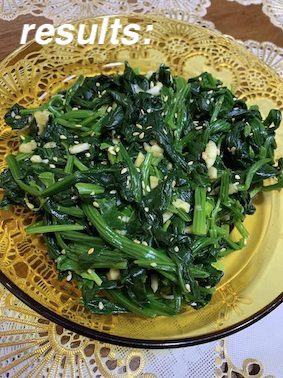
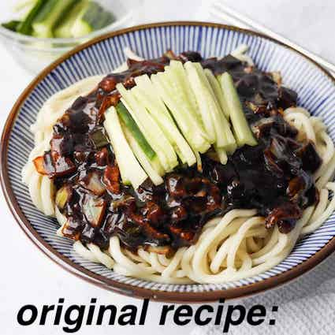
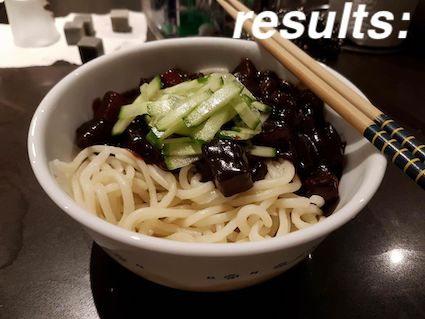
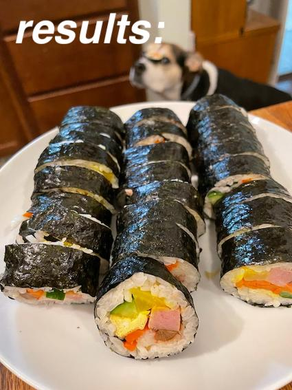
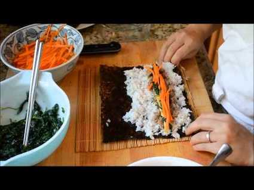

Blog
Sigeumchi-namul (spinach side dish)
.jpeg)

Ingredients
These are the things I needed to make this recipe:
- 1 bunch spinach, stems discarded (300g)
- 1 tbsp soy sauce
- ½ tbsp sesame oil
- 1-2 garlic cloves, finely minced
- ½ tbsp sesame seeds
- pinch of salt
How?
I started out by blanching the spinach in boiling hot water. I had only done this a couple times before
so it was fairly new to me. I could see the spinach shrink in no time so you really need more than you
think if you're going to be making this.
Rating: 6.8/10
Overall, this dish was very good, and the sesame oil added a depth of flavor. It's very simple, yet
tasty. So if you're ever in a time crunch, make this!
Recipe:
Click here for the
recipe.
Jajangmyeon (Black Bean Noodles)


Ingredients
- 550 grams thick wheat noodles
- 300 grams pork belly chopped
- 1 small yellow onion finely chopped
- 1 cup cabbage chopped
- 1 cup zucchini diced
- 2 stalks green onion finely chopped
- ⅓ cup Korean roasted black bean paste
- 3 tablespoon (avocado) oil
- 1 tablespoon oyster sauce
- 2 cups water
- 2 tablespoon cornstarch
- 2 tablespoon sugar
- ¾ cups cucumber thinly sliced for garnish
How?
At first I thought this recipe was going to be very hard but I was so wrong! I whipped this up in 30 minutes! I had to start by making the cornstarch slurry by combining sugar, cornstarch and water. Cornstarch makes the sauce nice and thick so that's why you really need to add this for the recipe.
I had to fry the black bean paste in oil first. You need to keep stirring! I forgot to and so some of the sauce stuck to the pan. Then I had to fry the pork belly too until brown on the edges. I took it out of the pan, and I added yellow onions and green onions. When they were soft I put in the other veggies. The smell was already amazing at this point! I put the prok belly back in as well as the black bean paste. After I added the corn starch the sauce got all nice and thick as I expected. I seasoned with oyster sauce. Now I had to boil the noodles already and when they were all done I could add the sauce and garnish with some fresh cucumber.
Rating: 8.7/10
I can tell you, I loved this recipe incredibly much! The flavors totally worked and I enjoyed the cucumber as a garnish. The pork belly was a perfect hearty and salty addition to this dish. I enjoyed everything. Maybe it was a little too salty, but I didn't mind. If you deal with high blood pressure maybe don't try this dish....
Recipe:
Click here for the
recipe.
Sigeumchi-namul (spinach side dish)

Ingredients
- 7 cups cooked medium grain white rice
- 10 ounces baby spinach
- 5 large eggs
- 1 can Spam
- 1 large carrot
- 1 medium danmuji
- 14-21 pieces marinated burdock root (optional)
- 7 sheets nori
- 1½ tablespoons toasted sesame oil
- 1½ teaspoon fine salt
- Oil
- Toasted sesame seed
How?
So I first had to repare the separate elements of the filling. I started out with blanching the spinach
and seasoning it. This went well, since I had made this before as a side dish.
After that I went on to the eggs. I had already beaten them and now I had to add some salt. Cooking the
eggs was a little bit more of a challenge because I had to estimate when they were cooked for about 70
to 80 percent. I think I got it though. Then I had to do some folding and I added the other half of te
egg at some point. At the end it all worked out and I was happy with the result. I cut the egg into
strips and put it aside.
Preparing the spam was quite easy as I only had to fry it up in a pan.
Next step was seasoning the carrots and sautéeing them until just tender. This went ok, although I didn't really cut the carrots in even strips so some were a little bit more cooked through. This wasn't a big problem but I probably could improve my cutting skills.
To the cooked rice I had to add some salt and sesame oil. After that I had to cover it until ready to use. The rice already tasted delicious to me.

Assembling the kimbap rolls was a lot of fun! I used a sushi mat to roll them up, but make sure to put plastic wrap over it so the rice doesn't stick to the mat.
At the end I only brushed the rolls with sesame oil and cut them up. After this I was all done! And let me tell you, they tasted amazing! I will definitely make this dish again.
Rating: 8/10
I really liked this dish, although it was kind of time consuming having to seperately prepare all of the ingredients. The work did pay of at the end and these rolls are perfect for on the go.
Recipe:
Click here for the
recipe.